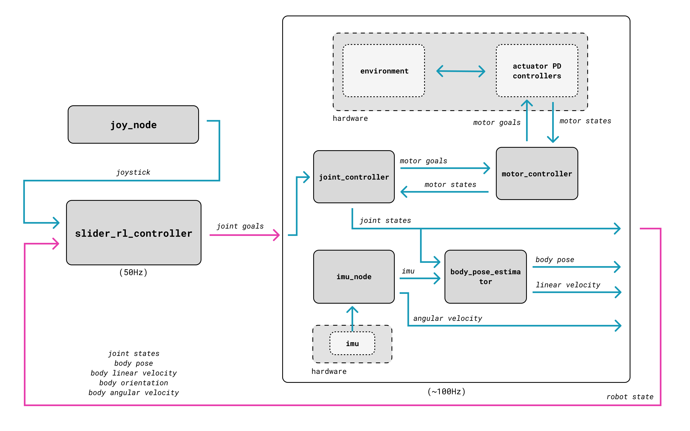

For my final year masters project at Imperial, I decided to tackle a dynamics problem that I'd been thinking about for a while; dynamic walking. This project coupled together some sub-projects that were interesting to solve on their own: "high" dof joint control, proprioceptive state estimation, system id and reinforcement learning.
I specifically chose to do reinforcement learning, not because I think that end-to-end RL is the "correct" approach, but because it was something I wanted to learn. I personally believe that mixed model based and model free approaches are going to become more prevalent.
Due to the robot having significant mechanical issues, I wasn't able to fully realize the ability of my controller on hardware, but I am still pretty happy with the result.
You can read my full report here which contains more technical details: DE_Masters_Thesis_2023

The complete control block diagram of the system. Most blocks correspond to ROS 2 nodes
Disturbance rejection in sim
A collection of several minute of real world walking